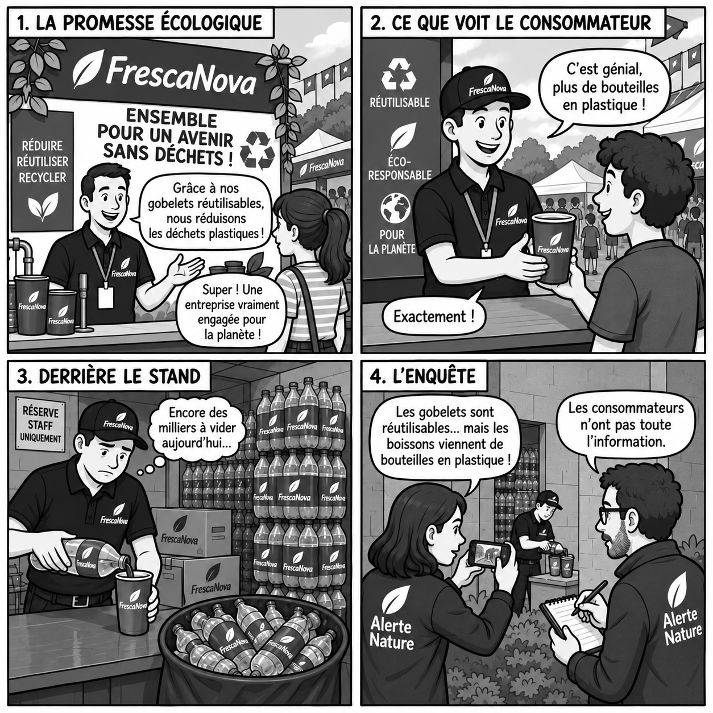
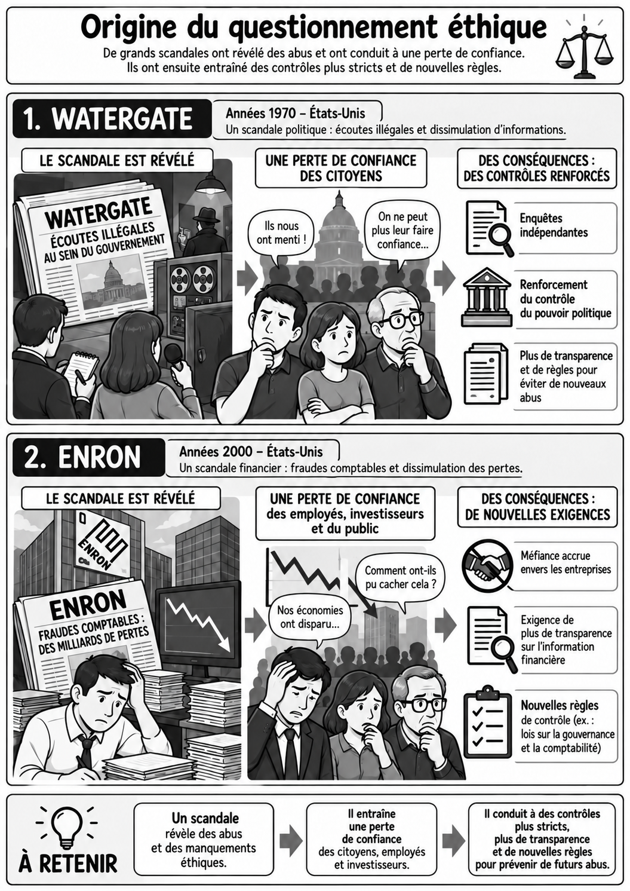
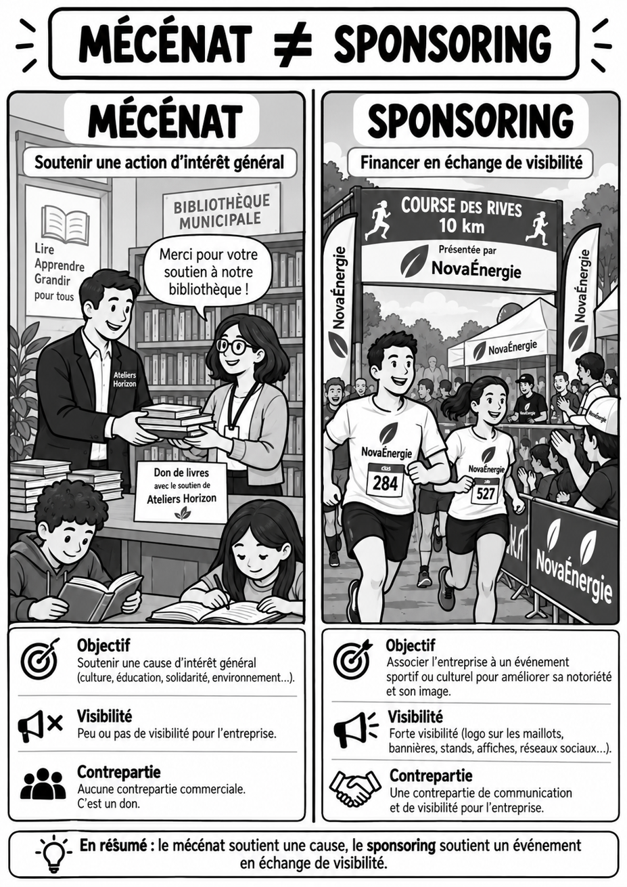

Problématique : Les organisations peuvent-elles s’affranchir des questions de société ?
Capacités visées :
☐ Analyser les évolutions des modes de vie et de consommation à prendre en compte par le management des organisations.
☐ Décrire l’apport des technologies numériques aux relations entre les organisations et les citoyens.
☐ Distinguer les diverses relations existantes entre une organisation et son écosystème.
☐ Préciser les enjeux éthiques de l’activité d’une organisation, d’une entreprise.
1. Peut-on toujours croire la communication d’une organisation ?
1.1 Des discours et des pratiques
Document 1 – FrescaNova : la promesse écologique et les pratiques observées
 |
Astuce 1 – Questionner une communication environnementale
Confrontez la promesse aux faits, aux preuves disponibles et aux informations laissées de côté. |
Question 1
Relevez les éléments qui donnent au consommateur l’image d’une entreprise respectueuse de l’environnement. Réponse sur feuille — reprenez le numéro de la question dans votre réponse. |
Afficher la correction
Éléments relevés : promesse « sans déchets », gobelets réutilisables, vocabulaire « éco-responsable », références au recyclage et à la planète, univers visuel associé à l’environnement.
Notion 1 – Greenwashing / écoblanchiment
Communication qui présente une image environnementale plus favorable que ne le justifient réellement les pratiques ou les preuves disponibles. |
Question 2
Comparez cette communication avec ce qui est montré « derrière le stand ». Réponse sur feuille — reprenez le numéro de la question dans votre réponse. |
Afficher la correction
Le discours met en avant les gobelets réutilisables alors que les boissons sont encore conditionnées dans de nombreuses bouteilles en plastique : une information importante est laissée hors champ.
Question 3
Formulez le problème que cette situation peut poser aux consommateurs et à l’entreprise, puis expliquez en quoi l’évolution des attentes environnementales des consommateurs peut conduire l’entreprise à adapter ses pratiques et sa communication. Réponse sur feuille — reprenez le numéro de la question dans votre réponse. |
Afficher la correction
Le consommateur peut être induit en erreur et perdre confiance dans la marque. Cette situation montre aussi que l’évolution des attentes environnementales oblige l’entreprise à faire évoluer non seulement sa communication, mais aussi ses pratiques pour conserver sa crédibilité.
1.2 Définir la notion d’éthique
Notion 2 – Éthique
Réflexion sur ce qui peut être considéré comme responsable ou acceptable dans une situation, au regard des valeurs en jeu, des conséquences possibles et des parties prenantes concernées. Appliquée aux entreprises, l’éthique dans les affaires interroge les décisions et les pratiques de l’entreprise dans ses relations avec ses parties prenantes. |
1.3 D’où vient le questionnement éthique ?
Document 2 – Origine du questionnement éthique
 |
Question 4
Expliquez le mécanisme commun aux deux scandales présentés : de la révélation d’un abus à l’apparition de nouvelles exigences. Réponse sur feuille — reprenez le numéro de la question dans votre réponse. |
Afficher la correction
Dans les deux cas : abus ou dissimulation → révélation → perte de confiance → demandes de transparence et de contrôle → renforcement ou création de règles destinées à prévenir de nouveaux abus.
À retenir 1 – Pourquoi le questionnement éthique se développe-t-il ?
Des pratiques jugées abusives ou trompeuses peuvent provoquer une perte de confiance. Cette perte de confiance conduit les citoyens, salariés, investisseurs ou consommateurs à demander davantage de transparence, de contrôle et de règles. L’éthique ne se réduit donc pas au respect d’une règle : elle conduit aussi à interroger la responsabilité des décisions et leurs conséquences. |
2. Pourquoi l’activité des organisations soulève-t-elle des enjeux éthiques ?
2.1 NaturaBaby : des décisions qui concernent plusieurs parties prenantes
Document 3 – Présentation de NaturaBaby
NaturaBaby conçoit et commercialise des couches, lingettes et produits d’hygiène pour jeunes enfants. L’entreprise emploie 164 salariés et réalise l’essentiel de ses ventes en France, mais elle exporte aussi vers la Belgique et l’Espagne. Depuis 2024, elle met en avant une stratégie de « fabrication plus locale » : l’assemblage final est réalisé dans son usine de l’Ouest de la France, tandis que certaines matières premières restent importées. Le coût des matières représente près de 40 % du prix de revient d’un paquet de couches. Les enquêtes clients montrent que le prix et la sécurité du produit restent les deux premiers critères d’achat. Toutefois, 61 % des répondants déclarent également regarder l’origine des matières et les engagements environnementaux de la marque. NaturaBaby prévoit d’agrandir son entrepôt logistique, d’automatiser une partie du conditionnement et de renforcer ses partenariats avec des structures locales. |
Document 4 – Un partenariat avec un ESAT
Depuis deux ans, NaturaBaby confie une partie de la préparation de coffrets promotionnels à l’ESAT Les Ateliers du Parc. Chaque semaine, une équipe de travailleurs en situation de handicap réalise le pliage des boîtes, l’insertion de notices et la constitution de lots destinés aux pharmacies partenaires. Le contrat représente environ 900 heures de travail par mois. Pour NaturaBaby, ce partenariat permet aussi d’absorber certains pics d’activité sans recruter de personnel temporaire. L’entreprise a cependant dû modifier ses procédures de contrôle qualité et adapter les délais de livraison. Le responsable industriel précise que le partenariat n’a pas vocation à remplacer les emplois existants dans l’usine. NaturaBaby présente cette coopération comme l’un de ses engagements en faveur de l’inclusion. Un ESAT (établissement ou service d’accompagnement par le travail) est une structure médico-sociale permettant à des personnes en situation de handicap d’exercer une activité professionnelle avec un accompagnement médico-social et éducatif adapté. |
Document 5 – Approvisionnement, environnement et communication
Les couches jetables utilisent notamment de la cellulose, des matières plastiques, des colles et différents composants absorbants. NaturaBaby a rejoint un programme de relocalisation d’une partie de son approvisionnement en cellulose afin de réduire la distance parcourue par cette matière et de sécuriser ses achats. Le fournisseur retenu s’engage à utiliser du bois provenant de forêts gérées selon un cahier des charges défini et à financer des opérations de replantation. L’entreprise a aussi remplacé certains emballages par des formats contenant moins de plastique. Elle reconnaît toutefois que ses produits restent majoritairement à usage unique et que leur fin de vie demeure un enjeu important. À l’occasion du « Vendredi solidaire », NaturaBaby reverse une partie du chiffre d’affaires réalisé sur son site à une association de protection de l’enfance. Sur les réseaux sociaux, la marque met en avant ces initiatives sous le slogan : « Prendre soin des bébés aujourd’hui, préserver leur monde demain. » |
Question 5
Repérez dans les documents les actions qui peuvent traduire la prise en compte de préoccupations sociales ou environnementales. Réponse sur feuille — reprenez le numéro de la question dans votre réponse. |
Afficher la correction
Exemples : partenariat avec un ESAT, relocalisation partielle de l’approvisionnement en cellulose, réduction du plastique des emballages, replantation, soutien à une association de protection de l’enfance.
Question 6
Identifiez les principales parties prenantes de l’écosystème de NaturaBaby concernées par ces actions et précisez une attente de chacune d’elles. Réponse sur feuille — reprenez le numéro de la question dans votre réponse. |
Afficher la correction
Exemples : clients (sécurité, prix, crédibilité des engagements), salariés (emploi et conditions de travail), ESAT (stabilité des commandes), fournisseurs (relations commerciales durables), association soutenue (ressources), acteurs du territoire et environnement (réduction des impacts).
Question 7
Montrez que les décisions de NaturaBaby font apparaître plusieurs enjeux éthiques. Réponse sur feuille — reprenez le numéro de la question dans votre réponse. |
Afficher la correction
Les décisions de NaturaBaby font apparaître plusieurs enjeux éthiques : inclusion des personnes en situation de handicap, maintien de l’emploi, réduction des impacts environnementaux, origine des matières premières, sincérité de la communication et soutien à une cause sociale. Ces enjeux peuvent faire naître des arbitrages entre coûts, performance et responsabilité.
Question 8
Proposez deux éléments qu’un consommateur devrait vérifier avant de considérer comme crédibles les engagements affichés par une entreprise. Réponse sur feuille — reprenez le numéro de la question dans votre réponse. |
Afficher la correction
Vérifier notamment les données chiffrées et leur source, les labels ou preuves disponibles, le périmètre exact de la promesse et les impacts éventuellement laissés de côté.
À retenir 2 – Les enjeux éthiques dans l’entreprise
Une même décision peut satisfaire certaines attentes tout en créant des tensions avec d’autres intérêts. L’éthique dans les affaires consiste à interroger la manière dont l’entreprise prend en compte les conséquences de ses décisions pour ses différentes parties prenantes. Une décision peut respecter les règles applicables tout en soulevant une question éthique au regard de ses conséquences ou des valeurs en jeu. Attention : les questions d’éthique ne concernent pas uniquement les entreprises, mais tous les types d’organisations. |
2.2 Qu’est-ce qui distingue l’éthique de la déontologie ?
Document 6 – Éthique et déontologie : deux logiques complémentaires
Notion 3 – Déontologie
Ensemble de règles et de principes de conduite liés à une profession ou à une fonction. L’éthique interroge ce qui paraît responsable ou acceptable dans une situation ; la déontologie formalise des règles de conduite plus directement opérationnelles. |
2.3 Comment la déontologie peut-elle préserver l’impartialité d’une décision publique ?
Document 7 – Une décision publique sensible
La commune de Riveclaire, 28 000 habitants, prépare la transformation d’un ancien terrain industriel en quartier mixte comprenant logements, commerces et espaces verts. Le projet doit être attribué à l’issue d’une procédure mettant en concurrence plusieurs promoteurs. Une adjointe au maire chargée de l’urbanisme participe aux réunions préparatoires et reçoit les dossiers des candidats. Quelques semaines avant la décision, l’un des promoteurs l’invite avec son conjoint à un match dans une loge d’entreprise. L’élue estime qu’elle restera parfaitement objective. Un autre élu lui rappelle cependant que la charte de l’élu local insiste sur l’impartialité, la probité et la prévention des conflits d’intérêts. La collectivité dispose d’un référent déontologue que les élus peuvent consulter de manière confidentielle afin d’obtenir un conseil sur leurs obligations. Le conseil municipal doit également rendre publics plusieurs éléments relatifs à la procédure et motiver la décision finale. |
Question 9
Repérez les éléments de la situation susceptibles de mettre en doute l’impartialité de la décision. Réponse sur feuille — reprenez le numéro de la question dans votre réponse. |
Afficher la correction
L’invitation est offerte par un promoteur candidat alors que l’élue participe à la procédure de décision. Même si elle se dit objective, cette situation peut créer un conflit d’intérêts ou, au minimum, une apparence de partialité.
Question 10
Expliquez le rôle que peut jouer le référent déontologue dans cette situation. Réponse sur feuille — reprenez le numéro de la question dans votre réponse. |
Afficher la correction
Le référent déontologue apporte un conseil confidentiel sur les obligations de l’élue et sur la conduite permettant de prévenir un conflit d’intérêts et de préserver l’impartialité de la décision.
Question 11
Proposez une conduite permettant à l’élue de préserver l’impartialité de la décision et justifiez votre réponse. Réponse sur feuille — reprenez le numéro de la question dans votre réponse. |
Afficher la correction
L’élue peut refuser ou restituer l’avantage, signaler la situation et, si nécessaire, se déporter de la procédure afin de préserver l’impartialité et la confiance dans la décision publique.
À retenir 3 – Toutes les organisations sont concernées
Les enjeux éthiques concernent aussi les associations, ONG, administrations et collectivités, même si leurs finalités et leurs responsabilités diffèrent. Éthique : nécessite un jugement et une argumentation sur ce qui est responsable ou acceptable. Déontologie : fournit des repères de conduite liés à une profession ou à une fonction. |
3. Pourquoi la transparence de l’information est-elle importante ?
Document 8 – Une communication financière attractive
L’association Horizon Solidaire collecte des dons pour financer des actions d’aide alimentaire et d’accompagnement scolaire. En 2025, elle a reçu 500 000 € de dons et subventions privées. Son rapport annuel affirme : « 90 % de nos dépenses servent directement la cause ». L’association considère que les dépenses de communication et de collecte « servent aussi la cause » puisqu’elles permettent de recueillir davantage de dons. Le rapport ne précise pas la méthode utilisée pour calculer le pourcentage de 90 %.
|
Document 9 – Règles communes et transparence
La normalisation comptable repose sur des règles communes d’enregistrement et de présentation des opérations. Elle vise notamment à rendre les informations plus comparables d’une période à l’autre et entre organisations. Une information financière utile doit cependant rester compréhensible et présenter les éléments nécessaires à l’interprétation des comptes. Des données exactes peuvent donc être insuffisantes si leur présentation conduit le lecteur à une conclusion trompeuse ou si la méthode de calcul n’est pas explicitée. |
Question 12
Calculez :
Réponse sur feuille — reprenez le numéro de la question dans votre réponse. |
Afficher la correction
a. Actions directes : 265 000 / 500 000 = 53 %. b. Avec les associations partenaires : (265 000 + 78 000) / 500 000 = 68,6 %.
Question 13
Expliquez pourquoi l’affirmation « 90 % de nos dépenses servent directement la cause » doit être interprétée avec prudence. Réponse sur feuille — reprenez le numéro de la question dans votre réponse. |
Afficher la correction
Le chiffre de 90 % dépend d’une méthode de calcul non explicitée. Certaines dépenses de communication, de collecte ou d’administration peuvent avoir une utilité pour l’association sans être des dépenses directement consacrées aux bénéficiaires. La formulation doit donc être interprétée avec prudence.
Question 14
Proposez deux informations supplémentaires qui permettraient aux donateurs de mieux apprécier l’utilisation des fonds. Réponse sur feuille — reprenez le numéro de la question dans votre réponse. |
Afficher la correction
Par exemple : préciser la méthode de calcul du « 90 % », présenter une ventilation complète des dépenses, comparer les résultats avec les années précédentes ou indiquer la part effectivement consacrée aux bénéficiaires.
Notion 4 – Normalisation comptable et transparence
Normalisation comptable : élaboration de règles communes pour produire et présenter l’information comptable et financière. Transparence : mise à disposition d’une information suffisamment fiable, compréhensible et accessible pour permettre aux parties prenantes d’interpréter la situation. |
À retenir 4 – Une règle commune ne suffit pas toujours
Des règles communes peuvent contribuer à la transparence, sans la garantir à elles seules. Une information peut être exacte mais néanmoins difficile à interpréter ou présentée de manière orientée. |
4. Les écarts entre salariés prouvent-ils toujours l’existence d’une discrimination ?
Document 10 – Clair&Net : contexte social
Clair&Net emploie 180 salariés dans des activités de nettoyage professionnel et de maintenance légère. L’entreprise a connu une croissance rapide et a recruté 38 personnes au cours des deux dernières années. La direction souhaite préparer son prochain plan d’action en matière d’égalité professionnelle. Elle dispose de plusieurs indicateurs, mais aucun diagnostic approfondi des causes n’a encore été réalisé. Les responsables de site expliquent que certains postes de cadre nécessitent des horaires décalés et des déplacements fréquents ; les représentants du personnel demandent toutefois que l’entreprise vérifie si ces contraintes sont réellement indispensables.
|
Document 11 – Interpréter les écarts
Un écart statistique peut signaler une situation à examiner, mais il ne suffit pas à lui seul à établir l’existence d’une discrimination. Il faut notamment comparer des situations comparables, rechercher les critères utilisés pour les décisions de recrutement, de rémunération, de promotion ou de formation, et vérifier si les différences observées reposent sur des éléments professionnels objectifs. |
Question 15
Comparez la place des femmes dans l’effectif, parmi les cadres, dans l’accès aux formations longues et dans les rémunérations. Repérez les écarts qui vous paraissent significatifs. Réponse sur feuille — reprenez le numéro de la question dans votre réponse. |
Afficher la correction
Les femmes représentent 58 % de l’effectif et 55 % des recrutements récents, mais seulement 25 % des cadres et 30 % des bénéficiaires de formations longues. Le salaire moyen des femmes cadres est aussi inférieur à celui des hommes cadres. Ces écarts méritent donc d’être analysés.
Question 16
Expliquez pourquoi ces données ne suffisent pas, à elles seules, à prouver l’existence d’une discrimination. Réponse sur feuille — reprenez le numéro de la question dans votre réponse. |
Afficher la correction
Ces données révèlent des écarts mais ne prouvent pas, à elles seules, une discrimination. Il faut comparer des situations comparables et examiner les critères réellement utilisés pour le recrutement, la rémunération, la promotion ou la formation.
Question 17
Proposez deux mesures permettant de réduire l’un des écarts observés et indiquez un indicateur permettant d’en suivre l’évolution. Réponse sur feuille — reprenez le numéro de la question dans votre réponse. |
Afficher la correction
Exemples : formaliser les critères de promotion, garantir un accès plus équilibré aux formations longues ou réexaminer les contraintes de mobilité et d’horaires. L’entreprise peut suivre la part des femmes parmi les cadres, l’accès aux formations ou les écarts de rémunération.
Notion 5 – Lutte contre les discriminations et égalité femmes-hommes
Lutte contre les discriminations : les décisions relatives à l’emploi doivent reposer sur des critères professionnels et non discriminatoires. Égalité femmes-hommes : les indicateurs permettent de rendre visibles des écarts ; ceux-ci doivent ensuite être analysés afin d’en rechercher les causes et d’adapter les actions. |
5. Une organisation peut-elle agir au-delà de son activité principale ?
5.1 Distinguer mécénat et sponsoring
Notion 6 – Mécénat et sponsoring
 |
Question 18
À partir de la Notion 6, formulez le critère principal permettant de distinguer mécénat et sponsoring. Réponse sur feuille — reprenez le numéro de la question dans votre réponse. |
Afficher la correction
Le critère principal est la contrepartie commerciale. Le sponsoring recherche une visibilité ou un bénéfice de communication clairement identifié ; le mécénat apporte un soutien à une activité d’intérêt général sans contrepartie commerciale équivalente.
5.2 Ybora Transports : plusieurs formes d’engagement territorial
Document 12 – Ybora Transports
Ybora Transports exploite des lignes d’autocars interurbains et emploie 95 salariés. L’entreprise souhaite renforcer son ancrage territorial. Elle finance 12 000 € par an le club de handball local ; en contrepartie, son logo figure sur les maillots, les panneaux du gymnase et les affiches des matchs. Elle met également gratuitement deux autocars à disposition d’une association qui organise des sorties culturelles pour des adolescents en situation de handicap. Les conducteurs volontaires effectuent ces trajets sur leur temps de travail, sans facturation à l’association. Enfin, le service informatique de l’entreprise accompagne pendant trois jours une banque alimentaire locale afin de sécuriser son système de gestion des dons. Ybora communique sur ces actions dans son rapport annuel, mais ne demande pas d’exclusivité commerciale aux organismes soutenus. |
Question 19
Qualifiez les trois actions de Ybora Transports : sponsoring, mécénat en nature ou mécénat de compétences. Justifiez chaque qualification. Réponse sur feuille — reprenez le numéro de la question dans votre réponse. |
Afficher la correction
Le financement du club avec affichage du logo relève du sponsoring. La mise à disposition gratuite des autocars constitue un mécénat en nature. L’intervention du service informatique auprès de la banque alimentaire correspond à un mécénat de compétences.
5.3 Associer les citoyens aux décisions
Notion 6 – Organisation civique et démocratie participative
Organisation civique : une organisation peut contribuer à l’intérêt général au-delà de ses buts propres. Démocratie participative : dispositifs qui associent les citoyens ou les usagers à la préparation, à la discussion ou au choix de décisions collectives. |
Document 13 – La ville de Belrive
La ville de Belrive consacre 250 000 € de son budget d’investissement à un dispositif participatif. Les habitants peuvent proposer des projets d’aménagement : végétalisation d’une cour, pistes cyclables, mobilier urbain ou équipements sportifs. Les services municipaux vérifient d’abord la faisabilité juridique et financière. Les projets retenus sont ensuite présentés sur une plateforme et soumis au vote des habitants. La municipalité s’engage à réaliser les projets arrivés en tête dans la limite de l’enveloppe disponible et publie chaque année l’état d’avancement des réalisations. |
Question 20
Montrez que le dispositif mis en place par la ville de Belrive relève de la démocratie participative, puis expliquez en quoi la plateforme numérique facilite la relation entre la ville et les citoyens. Réponse sur feuille — reprenez le numéro de la question dans votre réponse. |
Afficher la correction
Le dispositif relève de la démocratie participative car les habitants peuvent proposer des projets puis voter pour ceux qu’ils souhaitent voir réalisés. La plateforme numérique facilite la diffusion des projets, leur consultation et la participation des citoyens au vote, ce qui renforce les relations entre la ville et ses habitants.
6. Synthèse générale
À retenir 5 – Réponse à la question de gestion
Les organisations ne peuvent durablement ignorer les questions de société : leurs décisions affectent des parties prenantes qui expriment des attentes sociales, environnementales, économiques et civiques. La prise en compte de ces attentes passe notamment par l’éthique, la déontologie, la transparence, la lutte contre les discriminations, le mécénat et la participation des citoyens. Cette prise en compte ne supprime pas les tensions entre intérêts différents : elle oblige l’organisation à arbitrer, justifier ses choix et rendre ses pratiques plus lisibles. L’évolution des modes de vie et de consommation peut modifier les attentes adressées aux organisations et les conduire à adapter leurs pratiques. Les technologies numériques peuvent faciliter l’information, l’échange et la participation des citoyens, mais elles ne garantissent pas à elles seules la qualité de la relation. |
Question 21
En une quinzaine de lignes, en vous appuyant sur des exemples d’organisations étudiées dans ce dossier ainsi que sur vos connaissances, répondez de manière argumentée à la question de gestion : « Les organisations peuvent-elles s’affranchir des questions de société ? » Réponse sur feuille — reprenez le numéro de la question dans votre réponse. |
Afficher la correction
Une organisation peut ponctuellement ignorer certaines attentes sociales, environnementales ou civiques, mais elle ne peut durablement s’en affranchir. Ses décisions affectent des parties prenantes qui peuvent demander davantage de transparence, d’équité ou de responsabilité. Ainsi, FrescaNova risque de perdre la confiance des consommateurs si sa communication environnementale ne correspond pas à ses pratiques ; Horizon Solidaire doit rendre l’utilisation des fonds compréhensible ; Clair&Net doit analyser les écarts entre femmes et hommes ; la ville de Belrive associe les citoyens à certaines décisions. Prendre en compte les questions de société ne signifie pas satisfaire toutes les attentes, mais les intégrer aux décisions, arbitrer entre des intérêts différents et justifier les choix réalisés.